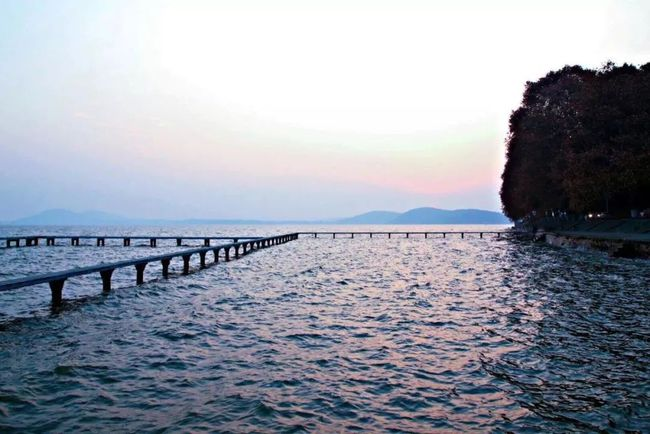
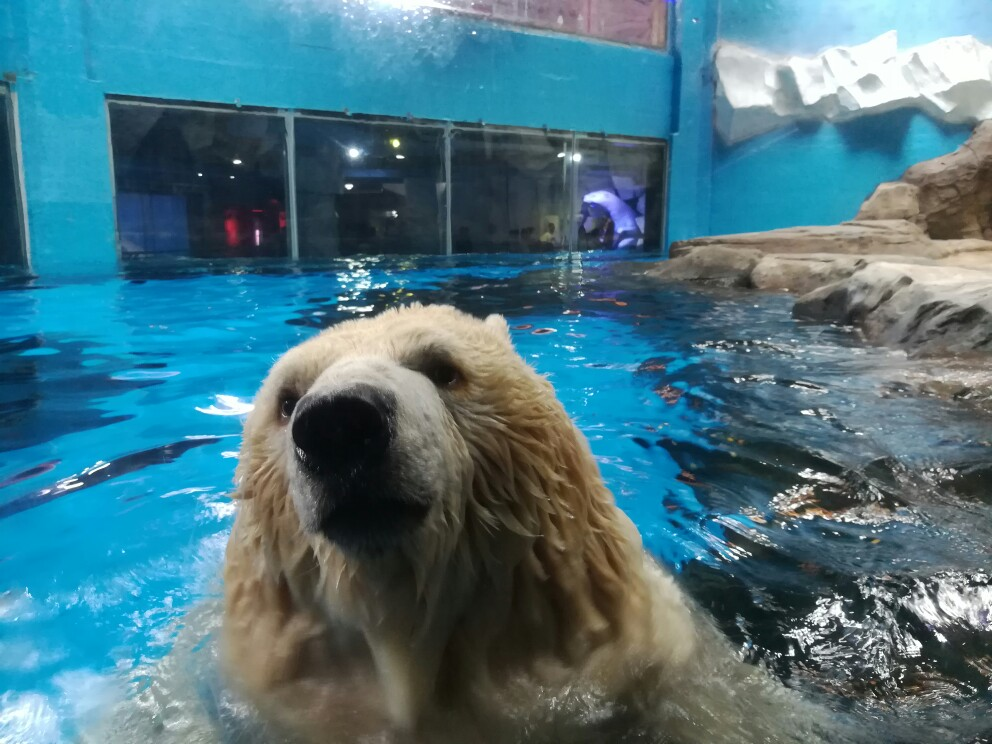

湖北著名景点
1.武汉大学
武汉大学是中华人民共和国教育部直属的重点综合性大学，位于有"九省通衢"之称的湖北省武汉市。 学校坐拥珞珈山，环绕东湖水，地势蜿蜒起伏，错落有致；校园绿树成荫，花香流溢；建筑独具风格， 美仑美奂，是世界上最美丽的大学之一。
2.武当山（世界文化遗产、道教圣地）
武当山，又名太和山，位于湖北省十堰市境内，景区总面积312平方公里。武当山是我国著名的道教圣地、 太极拳的发祥地、国家重点风景名胜区、全国十大避暑胜地，武当山属自然景观和人文景观完美结合的山 岳型风景名胜区，以其绚丽多姿的自然景观、规模宏大的古建筑群、源远流长的道教文化、博大精深的武当 武术著称于世，被誉为"亘古无双胜境，天下第一仙山"。
3.武汉黄鹤楼

黄鹤楼,位于湖北武汉武昌长江南岸蛇山峰岭之上,楼5层，高50余米，72根圆柱拔地而起， 60个翘角凌空舒展，恰似黄鹤腾飞。始建于三国时代吴黄武二年 （公元223年），历代屡建屡毁，今天看到的 黄鹤楼，是1985年重建的。黄鹤楼是国家5A级景点， 享有“天下绝景” 、“天下江山第一楼”之称，是武汉的城市地标之一， 因唐代诗人崔颢“昔人已乘黄鹤去， 此地空余黄鹤楼”的诗句而名扬天下，李白等都为黄鹤楼留下了诗词。 登上黄鹤楼远眺，可以看到滚滚长江和武汉三镇风光。 武汉三镇风光。
4.神龙架风景区
神农架（也称神农架林区），位于湖北省的西部，北面和南面分别于十堰市（武当山所在地）和宜昌市 （三峡大坝所在地）相邻。作为一个区域广阔的旅游目的地，分为神农顶旅游区、天燕旅游区、香溪源旅游区 和玉泉河旅游区，当你来到神农架林区，就如同进入了一个原始森林，处处都是参天大树，草木茂盛，每天都 是在大自然的天然氧吧中畅游，完全远离喧嚣和浑浊的城市生活。在神农顶旅游区，你可以登山“华中屋脊”， 旅游区内的神农顶是华中地区的第一高峰，还可以观赏到珍稀可爱的金丝猴，这里还是神秘的“神农架野人”出 没的地方，经常会发现一些野人的毛发、脚印等遗迹！
5.中国唐城（襄阳）
中国唐城位于文化底蕴深厚、自然风光秀美的岘山临江风景区，将岘山、汉水、孟浩然、习家池等大批代表性 襄阳文化元素注入景区，为游人呈现浪漫唐城之旅，也是古装拍照的理想之所。 景区建有凯旋楼、明德门、 朱雀廊、东西市等建筑群，高大的古典建筑与汉水粼粼波光相映成趣，踏入大门后仿佛穿越时空梦回唐朝， 夜游至此更是别有一番风味。这里还是影视拍摄基地，《妖猫传》便是在此取景的。
6.武汉海昌极地海洋公园
武汉海昌极地海洋公园，连续六年获得湖北地区“最受欢迎主题公园”，国家极地科普教育极地、国家4A级旅游 景区。位于武汉市东西湖区，包含极地王国、海洋王国、动物王国、小动物王国和欢乐岛共计四区一岛五大 区域，以南北极动物表演、展示、互动、科普为主，涵盖旅游、休闲、亲子度假等多种娱乐方式。武汉海昌极 地海洋公园共拥有上千种，万余只极地海洋动物、陆地小动物、两栖爬行动物和丛林飞鸟；海、陆、空动物产 品全面覆盖，配套商用物业在华中区域开创了以极地海洋公园为主题，集休闲、饮食、娱乐、度假等综合配套 与一体的海洋生态国际社区。
7.恩施大峡谷
恩施大峡谷位于恩施市屯堡乡和板桥镇境内，是清江大峡谷一段，峡谷内有地缝，有层层叠叠的峰丛，还有近 乎垂直于峡谷的大断崖。 景区可以分为山下的云龙河地缝和山中区域。进入景区后，先乘坐观光车前往云龙 河地缝，游玩后继续乘坐观光车到达景点“倒灌水”（观光车到这里结束）。从这里开始，沿着一条环形的山间 台阶可以游遍整个山中区域，不用走回头路。游客可以全程步行（约3小时），也可以在上山途中选择一段索 道，在下山途中选择一段电梯。下山后，再次乘坐观光车到达景区大门。其中主要景点有一线天、绝壁长廊和 一炷香等。“一炷香”是高达150多米，较小的直径只有4米的峰柱，是整个景区的标志，是大峡谷的镇谷之宝。